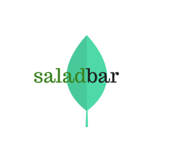

|  | Salad Bar |
| link to .apk | |
| link to source zip | |
| link to github repo | |
App DescriptionSalad Bar lets you build salads from a selection of restaurants. Build your salad using visual representations of the salad ingredients. Simply drag and drop the ingredients you want on your salad. The app lets you choose from an assortment of ingredients. Select from multiple base ingredients, heaps of toppings and, a bundle of delicious premium ingredients and assorted salad dressings. We have added a feature that lets the user shake the device to let the app build a salad from random ingredients. Once you are done building your salad you can finalize your order by pressing the “place order” button. You are then presented with a confirmation page that has your confirmation number, the date and time of your order and a list of the salads you have built including their ingredients and price. Once the order is ready, you will then receive a notification. JUnit TestingTo test the application’s logic, JUnit tests were written to test the Salad, Order, OrderProcessor and Ingredient classes. These test were run with the code coverage feature from Android Studio. |
|
| link to youtube video | |